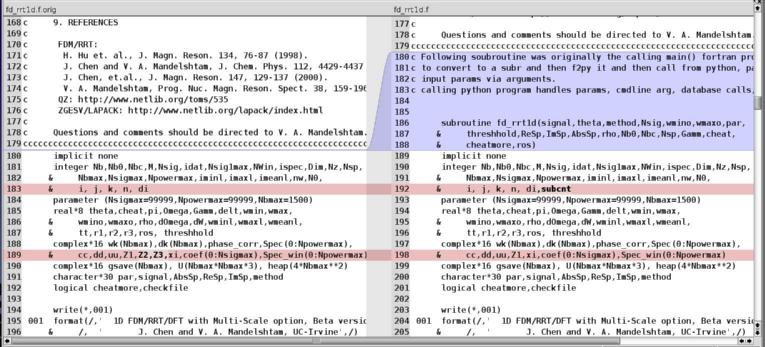
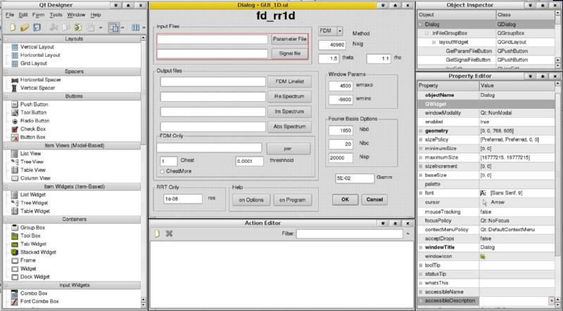

v0.1, 01 Aug 2008
|
Note
|
This HOWTO is still in beta
This piece is still in progress. There are still some unfinished bits in
both the Python wrapper and this HOWTO. The GUI is still unfinished, the
database connectivity is still not fully described, and there are some typos
(and probably a few thinko's as well).
However, what's written below is essentially correct.
|
1. Introduction
FORTRAN has the reputation for being old, crufty, quite hard to use and stuck in some very old programming paradigms. However, recent versions of FORTRAN include very modern abilities and many people are still using it, especially for pure number crunching as the compilers are still among the best for doing so. FORTRAN does not provide easy access to GUI's, relational databases, or methods for handling options (AFAIK - please correct), while many scripting languages, such as Python & Perl do.
This is how I converted a very sophisticated, but fairly UI-ugly (and hard-to-modify) FORTRAN program to one that uses Python as the application glue. Python was used to do the scut work of command-line user interface and configuration file management. It was also used to add an optional GUI to it and record some usage to a relational database. I used the f2py module of the scientific Python package numpy to do the FORTRAN compilation and generation of the shared lib, and then used Qt-designer and the Qt widget set to draw the GUI and then PyQt to convert it to Python. That sounds quite complex, but as you'll see, it's not especially if you use a recent version of Linux as all the required packages are available for free.
This was the 1st time I've used numpy for this and it worked much better than I had expected. My previous experience had been with SWIG (the Rosetta Stone for mixing computer languages), and while SWIG allows you to do tremendous magic, it was a slog to get it to work. With numpy and f2py, it just worked.
The end result is a more easily maintainable program that separates the FORTRAN math engine from the user interface, provides a more standard option-handling and configuration file capabilities, provides the (optional) GUI, and also adds reporting to a remote relational database for use and platform tracking. All this in about 300 lines of code which includes much debugging.
2. The Problem
The initial problem was that a researcher had a great Magnetic Resonance (MR) analysis program for proteins that he wanted to be more user-friendly. It was written in FORTRAN and ran quite efficiently, but it was difficult to use.
The last time I wrote anything in FORTRAN was in the 70's but I got the code and figured out approximately what it did. I then ran it thru a profiler (oprofile) and was able to tell where it spent its time (90% in 1 nested set of functions):
$ opreport --exclude-dependent --demangle=smart --symbols /home/hjm/shaka/1D-Mangalam-py/fd_rrt1d.so
CPU: Core 2, speed 1667 MHz (estimated)
Counted CPU_CLK_UNHALTED events (Clock cycles when not halted) with a unit mask of 0x00 (Unhalted core cycles) count 100000
samples % symbol name
1107170 61.4356 cqzhes_
345869 19.1919 cqzvec_
179710 9.9719 cqz_
144523 8.0194 fd_rrt1d_
6700 0.3718 _g95_exp_z8
4593 0.2549 _g95_power_z8_i4
4171 0.2314 umatrix1d_ms0_
3231 0.1793 fd_1d_
1336 0.0741 .plt
1091 0.0605 cqzval_
...
I was initially going to try to improve the efficiency but for a number of reasons that was not a priority at this time. Ease of use, ability of others to help improve it, and multi-platform ability were higher priority for the researcher.
Since I had some experience with Python, I decided that this would be a good time to try out the f2py functionality of numpy.
The original FORTRAN code I was given included 3 FORTRAN source files totalling 1880 lines and some associated configuration and support files.
3. Converting the FORTRAN to a shared lib
The first thing that I did was to convert the FORTRAN main() to a function so it could be called from Python. Since I wasn't re-writing the application, I just needed a Python front-end to set everything up and then kick off the run by passing all the required variables to the native FORTRAN routines. This takes only a few lines of code - primarily to add the subroutine call with all the variables that were being set from the calling Python:
subroutine fd_rrt1d(signal,theta,method,Nsig,wmino,wmaxo,par,
& threshhold,ReSp,ImSp,AbsSp,rho,Nb0,Nbc,Nsp,Gamm,cheat,
& cheatmore,ros)
that's really all it took. Besides that single change, there were few changes to the FORTRAN code besides inserting some debugging variables and comments to myself to clarify the code a bit more. Here's a diff view:

To compile the whole thing into a shared lib that can be called from Python took little more work:
f2py --opt="-O3" -c -m fd_rrt1d --fcompiler=gnu95 --link-lapack_opt *.f
The above line uses the gfortran compiler (aka gnu95) which seems to both generate marginally faster code and is also more compatible with MacOSX than the g95 compiler I 1st tried (g95 worked fine on Linux, but had problems on MacOSX due to API incompatibilities with numpy on MacOSX). The end result of this command was a shared lib fd_rrt1d.so which is callable by subroutine name by both Python and FORTRAN (the FORTRAN code calls several subroutines spread over those 3 files). That is one of the magic things about the numpy package; it all works the way it's supposed hiding the considerable magic.
|
Note
|
Undefined symbols in library
One hiccup was that when I tried this on a different system that had a version of liblapack, I was able to compile the shared lib, but it complained about undefined symbols:
$ ./1d.py
Traceback (most recent call last):
File "./1d.py", line 27, in <module>
from fd_rrt1d import *
ImportError: /home/hjm/shaka/1D-Mangalam-py/fd_rrt1d.so: undefined
symbol: zgemm_
sure enough, nm reports it as undefined:
$ nm fd_rrt1d.so |tail
000065b0 t string_from_pyobj
U strlen@@GLIBC_2.0
U strncpy@@GLIBC_2.0
0001df40 b u.1294
00013bee T umatrix1d_dms0_
000128c3 T umatrix1d_dms1_
00015458 T umatrix1d_ms0_
U zgemm_ <---
U zgemv_
U zgesv_
However, I installed a newer version of liblapack (liblapack-dev, from the Ubuntu 8.04 tree and recompiled and that seems to have addressed the issue, even tho the previously offending symbols are still undefined. No, I don't understand this.
|
I wrote a skeleton Python program that assigned the variables and called the FORTRAN code. Astonishingly, it worked on the 1st try, so I continued to expand the skeleton to add the commandline option-handling.
4. Commandline option-handling
|
Note
|
Option Handling
There 4, count 'em, 4 ways of setting options in the 1D app. The easiest
is to set nothing, which causes the internal, hard-coded defaults to be used.
If there is a configuration file, the values set in that file will override
over the defaults. The variables that are not set in that file will use
the defaults. If you set values from the commandline (—wmaxo=4000), those
will override those set from the config file as well as the defaults.
Finally, those variables that are set from the GUI have the highest precedence.
There's a bit of logic code that determines all that, but it's not complicated.
|
Python has a standard way of providing commandline option handling this via its getopt package. It's probably not the best, but there's a lot to be said for doing it in a semi-standard way. It's also very easy to implement.
The following is the entire option-handling code for the MANY options that it supports and
reads any defined commandline option in, then either calls a function (such as —gui) or does some munging of the variable (—wmaxo) and sticks it in a dictionary (aka hash) for easy lookup and passing to other functions. If the option is unrecognized, it just calls the usage() function to let the user figure out the error of his ways.
import getopt
...
try:
opts, args = getopt.getopt(sys.argv[1:], 'hD', ['help', 'debug', 'help1d', 'gui', 'nodb', 'paramfile=', 'signal=', 'theta=', 'method=', 'Nsig=', 'wmino=', 'wmaxo=', 'par=', 'threshhold=', 'ReSp=', 'ImSp=', 'AbsSp=', 'rho=', 'Nb0=', 'Nbc=', 'Nsp=', 'Gamm=', 'cheat=', 'cheatmore=', 'ros='])
except getopt.GetoptError:
# print help information and exit:
print "There was an error specifying an option flag. Here's the correct usage:"
usage(1)
# set up the options required
for opt, arg in opts:
if opt in ('-h', '--help'): usage(1)
elif opt in ('-D', '--debug'): DEBUG = 1
elif opt in ('--help1d'): usage1d(1)
elif opt in ('--gui'): gui()
elif opt in ('--nodb'): USEDB = 0
elif opt in ('--paramfile'): paramfile = arg
elif opt in ('--signal'): clcfg['signal = arg'] # file name
elif opt in ('--theta'): clcfg['theta'] = float(arg) # float
elif opt in ('--method'): clcfg['nmr_method'] = arg # FDM, RRT or DFT
elif opt in ('--Nsig'): clcfg['Nsig'] = int(round(float(arg))) #int
elif opt in ('--wmino'): clcfg['wmino'] = int(round(float(arg))) #int
elif opt in ('--wmaxo'): clcfg['wmaxo'] = int(round(float(arg))) #int
elif opt in ('--par'): clcfg['par'] = arg # linelist output file
elif opt in ('--threshhold'): clcfg['threshhold'] = float(arg)
elif opt in ('--ReSp'): clcfg['ReSp'] = arg # file name
elif opt in ('--ImSp'): clcfg['ImSp'] = arg # file name
elif opt in ('--AbsSp'): clcfg['AbsSp'] = arg # file name
elif opt in ('--rho'): clcfg['rho'] = float(arg) #
elif opt in ('--Nb0'): clcfg['Nb0'] = int(round(float(arg))) #
elif opt in ('--Nbc'): clcfg['Nbc'] = int(round(float(arg))) #
elif opt in ('--Nsp'): clcfg['Nsp'] = int(round(float(arg))) #
elif opt in ('--Gamm'): clcfg['Gamm'] = float(arg) #
elif opt in ('--cheat'):
clcfg['cheat'] = float(arg) # float
if clcfg['cheat'] != 1 or clcfg['cheat'] != 0:
print >> sys.stderr, "cheat must be '1' or '0'"
sys.exit(1)
elif opt in ('--cheatmore'):
clcfg['cheatmore'] = arg # T or F
if clcfg['cheatmore'] != 'T' or clcfg['cheatmore'] != 'F':
print >> sys.stderr, "cheatmore must be 'T' or 'F'"
sys.exit(1)
elif opt in ('--ros'): clcfg['ros'] = float(arg) #
5. Configuration File Handling
The original FORTRAN program supported a custom-written configuration file input of options that had this form:
'2p-no-noise.txt' /signal
1.5708 /theta
'FDM' /method (FDM/RRT/DFT)
4 /Nsig
-9000 4500 /wmin wmax
'par', 1d-4 /parameters, output threshhold
'fdm','none','none' /ReSpectrum,ImSpectrum,AbsSpectrum
1., 512, -20 /rho, Nb0, Nbc
20000, 5d-2 /Npower, Gamm
1 F /cheat, cheatmore
1d-8 /ros
User-written FORTRAN code then parsed this to set the variables. In providing the Python front-end, it was extremely easy to provide a more sophisticated way of doing this using the configobj module which is designed to do just this.
from configobj import ConfigObj # for the configuration module
...
if paramfile != "": # If there's a param file named, try to get params from it.
fcfg = ConfigObj(file(paramfile)) # reads all variables in file as strings
# now have to coerce everything from the param file that is not a
# string to the correct type
# following members used to iterate over to coerce into int or float
int_params = ("Nsig", "Nsp", "wmino", "wmaxo", "Nb0", "Nbc")
float_params = ("cheat", "theta", "threshhold", "rho", "Gamm", "ros")
for ip in int_params: fcfg[ip]=int(fcfg[ip])
for fp in float_params: fcfg[fp]=float(fcfg[fp])
I had to add some logic to allow options entered at the commandline to override those in the configuration file, but essentially the code above was all that was needed to support a configuration file that allows key = value pairs that can be nested into arbitrary stanzas.
Here's an extract of the config file showing assignment of strings, ints, and floats. Note that all values are interpreted as strings and have to be coerced into the appropriate type - see above in the option-handling section. The config file included in the tarball includes a summary explanation of how the file is structured and the URL to the home page of the configobj module.
# signal is the file that contains the signal data; if no leading path, then it is
# assumed to be in the current directory.
signal = "2p-no-noise.txt" # file containing the signal data
theta = 1.5708 # fl pt var returned as string, conv in wrapper code
method = "FDM" # can be one of (FDM/RRT/DFT)
Nsig = 4 # int var returned as string, conv in wrapper code
6. Graphical User Interface
The addition of a GUI used to be stuff of wizards and black arts. It's still not trivial but it's considerably easier using the Designer approach, in which you use an application that allows you to drag control widgets to a canvas, arranging them as you like.
I used Trolltech's Qt widget library and their VERY easy-to-use Designer app to mock up an interface and then converted the interface XML description to Python using Riverbank's PyQt toolkit. Here's a screenshot of the Qt4 Designer being used to design the fd_rr1d GUI:

After the UI is drawn and saved as GUI_1D.ui (an XML representation of the design), the UI file is converted to Python code using the PyQt utility pyuic4.
$ pyuic4 GUI_1D.ui > UI.py
The autogenerated code (UI.py) is then wired to functionality using conventional programming techniques or by using Qt's system of Signals & Slots that can be mostly done using their Designer application
The code required for making the proof of concept (a GUI that pops up and allows the user to set all the options graphically) is actually quite concise (the complexity is hidden in the Qt lib that you link to).
from PyQt4.QtCore import * # PyQt core libs
from PyQt4.QtGui import * # PyQy GUI components
from GUI_1D import * # the interface definition file converted to Python code
...
# the class multiply inherits from the library prototype and the specific interface
# class defined in the designer ui -> py
class Form1D(QDialog,Ui_Dialog):
# to pop it up, it only needs to __init__ itself, declare its parent (itself) as
# it's a top-level dialog, and then call the designer -> pyuic4-generated setupUi()
# to make it do anything useful, I have to write all the glue code to pass
# the params, connect signals & slots, do error-checking, etc. but his pops it up
# don't forget to erase the no-longer needed class and defs when finished.
def __init__(self, parent=None):
super(Form1D, self).__init__(parent)
self.setupUi(self)
def gui():
"""To pop up the designer-built form, it only needs to declare an instance of the
QtApplication, ditto the form itself, and show it.
To make it do anything useful, still have to write all the glue code to pass
the params, connect signals & slots, do error-checking, etc. but this pops it up.
"""
app = QApplication(sys.argv)
form = Form1D()
form.show()
app.exec_()
...
# the above class is referenced from option-handling stanza:
for opt, arg in opts:
if opt in ('-h', '--help'): usage(1)
...
elif opt in ('--gui'): gui()
So if you started the app with the —gui option, the GUI window would pop up and allow you fill out all the variables via the mouse. [This section still incomplete]
7. Relational Database connectivity
When releasing a piece of academic software into the wild, it is often useful to the author to figure out how it's being used so that she can rewrite instructions, concentrate on most-used features, find out the platform distribution, etc. This mechanism can be exploited trivially using Python's Relational DataBase (RDB) connection module. During the run of this program, the Python wrapper provides all the variables, times the execution of the run, and can provide some network information to the author. This information is presented at the end of the run with a request to send the info back to the author. If the user agrees, the Python wrapper attempts to contact a pre-defined database server and send back the information.
The mechanism is straightforward:
-
collect the information
-
compose an INSERT command to the RDB
-
show that information and ask the user's permission to return it.
-
if granted, connect to the remote RDB and execute the INSERT command.
The information returned includes the date, the hostname, IP #, and OS of the computer, all program variables, the program run-time, and some platform information about the machine that ran the program.
Here's the info collected. Note that the sysinfo string is the full output of
lshw -short and should be trimmed considerably.
date: Tue Jul 29 15:20:41 2008
user: hjm
host: bongo
ipnbr: 128.200.34.98
OS: Linux
sysinfo: H/W path Device Class Description
================================================
system Computer
/0 bus Motherboard
/0/0 memory 3041MiB System memory
/0/1 processor Intel(R) Core(TM)2 CPU T5500 @ 1.66GHz
/0/1/0.1 processor Logical CPU
/0/1/0.2 processor Logical CPU
/0/100 bridge Mobile 945GM/PM/GMS, 943/940GML and 945GT Express Memory Controller Hub
/0/100/1 bridge Mobile 945GM/PM/GMS, 943/940GML and 945GT Express PCI Express Root Port
/0/100/1/0 display Radeon Mobility X1400
/0/100/1b multimedia 82801G (ICH7 Family) High Definition Audio Controller
/0/100/1c bridge 82801G (ICH7 Family) PCI Express Port 1
/0/100/1c/0 eth0 network 82573L Gigabit Ethernet Controller
/0/100/1c.1 bridge 82801G (ICH7 Family) PCI Express Port 2
/0/100/1c.1/0 wmaster0 network PRO/Wireless 3945ABG Network Connection
/0/100/1c.2 bridge 82801G (ICH7 Family) PCI Express Port 3
/0/100/1c.3 bridge 82801G (ICH7 Family) PCI Express Port 4
/0/100/1d bus 82801G (ICH7 Family) USB UHCI Controller #1
/0/100/1d.1 bus 82801G (ICH7 Family) USB UHCI Controller #2
/0/100/1d.2 bus 82801G (ICH7 Family) USB UHCI Controller #3
/0/100/1d.3 bus 82801G (ICH7 Family) USB UHCI Controller #4
/0/100/1d.7 bus 82801G (ICH7 Family) USB2 EHCI Controller
/0/100/1e bridge 82801 Mobile PCI Bridge
/0/100/1e/0 bridge PCI1510 PC card Cardbus Controller
/0/100/1f bridge 82801GBM (ICH7-M) LPC Interface Bridge
/0/100/1f.1 storage 82801G (ICH7 Family) IDE Controller
/0/100/1f.2 storage 82801GBM/GHM (ICH7 Family) SATA AHCI Controller
/0/100/1f.3 bus 82801G (ICH7 Family) SMBus Controller
runtime: 5.47741103172
par : FDM_par.out
Nb0 : 100
Nsig : 40960
ImSp : ImSp_spectra.data
cheat : 1.0
signal : 2p-no-noise.txt
nmr_method : FDM
cheatmore : F
Nsp : 20000
ReSp : ReSp_spectra.data
wmaxo : 4500
rho : 2.0
threshhold : 0.0001
Nbc : -20
theta : 1.5
Gamm : 0.05
ros : 1e-08
AbsSp : AbsSp_spectra.data
wmino : -9000
The entire data to be returned (formatted as above) is presented to the user just prior to sending it, so they have the opportunity to refuse sending the information.
8. Additional useful hints
Presenting help files in an easily navigable way usually requires a hypertext browser or a custom screen pager. Python offers a very easy way to present any text file via any pager application on the system. Since most *nix-like systems have the less pager, I just called that pager on the help file. Here's the entire function that presents pagable help text.
from pydoc import pipepager
...
def usage1d(code):
try:
help_fp = file("1d_orig_help.txt", "r")
help_txt = help_fp.read() # read in any text from a text file.
except:
print "Can't find the help file - should be called '1d_orig_help.txt' - Did you rename it?"
sys.exit(code)
pipepager(help_txt, '/usr/bin/less -NS') # pipe help text into 'less -NS'
sys.exit(code)
9. Download the entire code tree
The entire code tree can be downloaded The from here. The File Manifest is included; those files not explicitly named are probably not required.